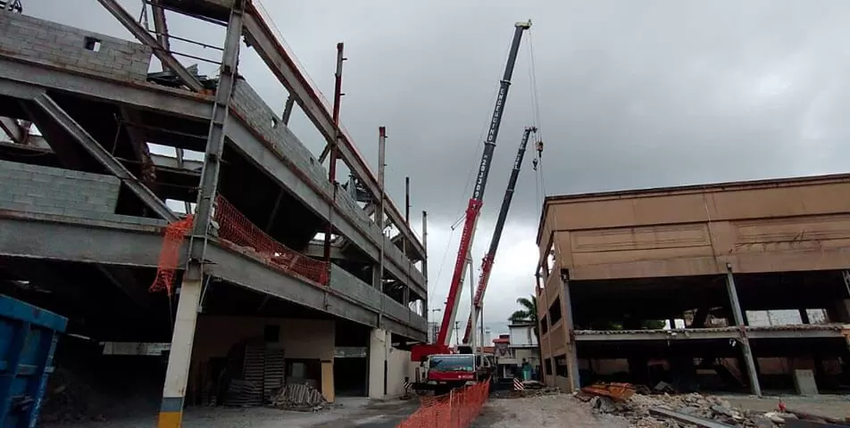
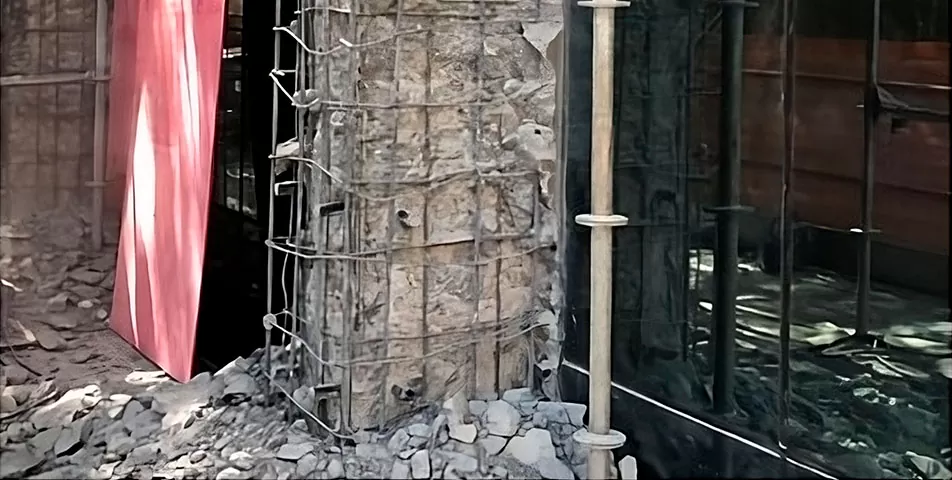
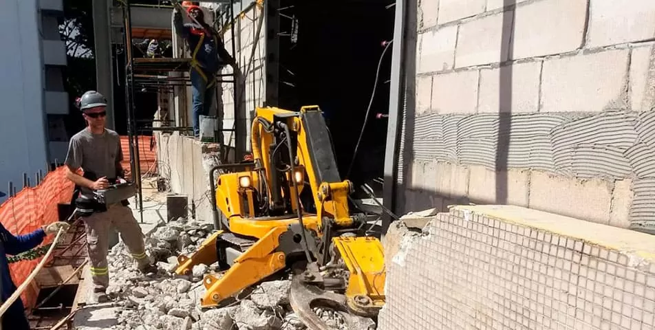
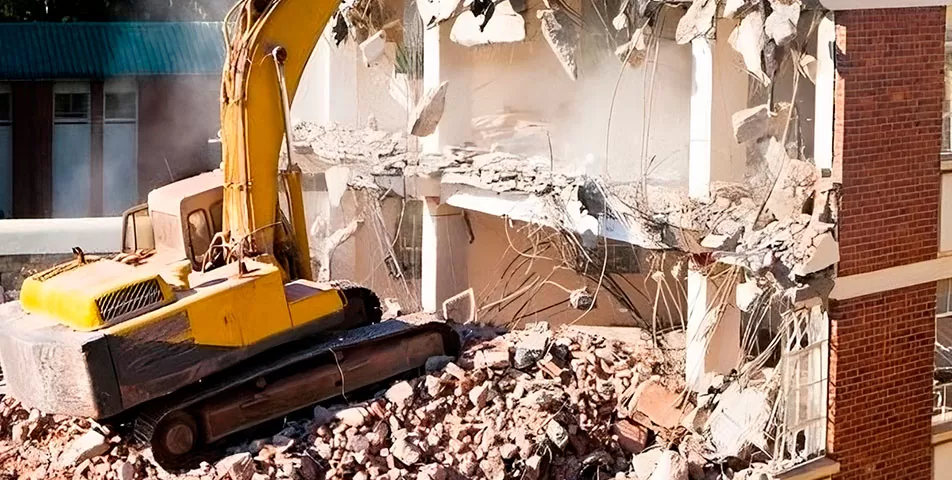
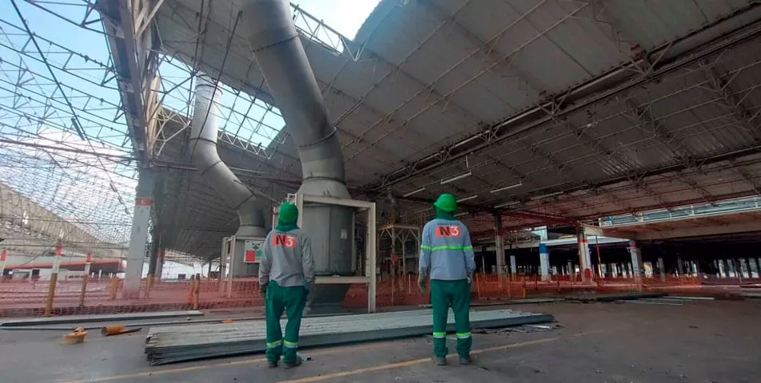

Demolição Controlada
A demolição controlada é o método indicado para demolir total ou parcialmente estruturas. Para garantir o controle do entulho, níveis de ruídos e poeira extremamente baixos e sem vibração.
Na N3 Demolições, oferecemos uma ampla gama de serviços especializados para atender às necessidades específicas de cada projeto. Com décadas de experiência no setor, nossa equipe altamente qualificada e equipamentos de última geração garantem resultados excepcionais em todas as etapas do processo. Confira nossos serviços abaixo:

A demolição controlada é o método indicado para demolir total ou parcialmente estruturas. Para garantir o controle do entulho, níveis de ruídos e poeira extremamente baixos e sem vibração.

O retrofit é uma solução eficaz para revitalizar e modernizar estruturas existentes, garantindo sua funcionalidade e segurança. Nossa equipe especializada em retrofit trabalha em estreita colaboração com os clientes para desenvolver soluções sob medida que atendam às suas necessidades específicas, enquanto preservam a integridade estrutural do edifício.

A demolição robótica oferece segurança ao operador, porque a máquina é controlada remotamente, aumentando a eficiência e a produtividade. Um robô bem operado pode substituir até 22 marteletes pneumáticos operados por humanos. Ou seja, sem fadiga, especialmente em espaços confinados ou áreas insalubres, onde a demolição manual seria o único método até então.

A Demolição mecanizada é o método mais utilizado dentro de uma demolição, atuando com máquinas a empresa presta um tipo de serviço com maior agilidade e melhor custo-benefício quando comparado a outros métodos.
A demolição manual é a abordagem indicada para desmontar estruturasque exigem cuidados adicionais, especialmente em áreas suscetíveis a desmoronamentos e áreas que têm ligações com vizinhos.

Desmontagem industrial é o processo de desfazer estruturas, equipamentos ou instalações industriais para reciclagem, reutilização ou descarte seguro.